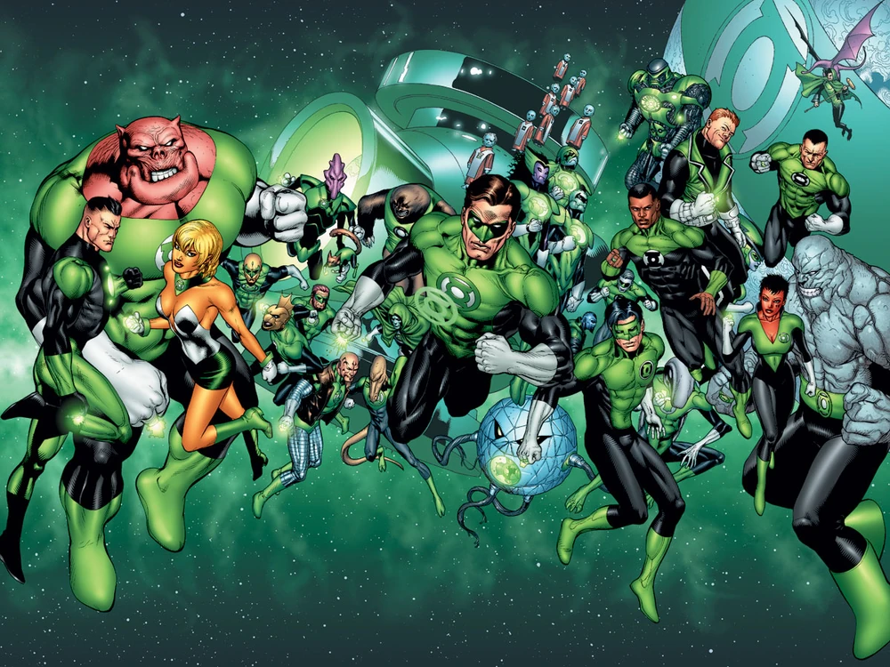
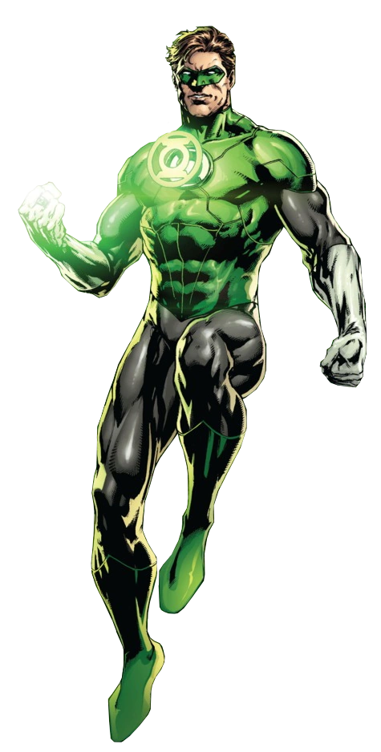
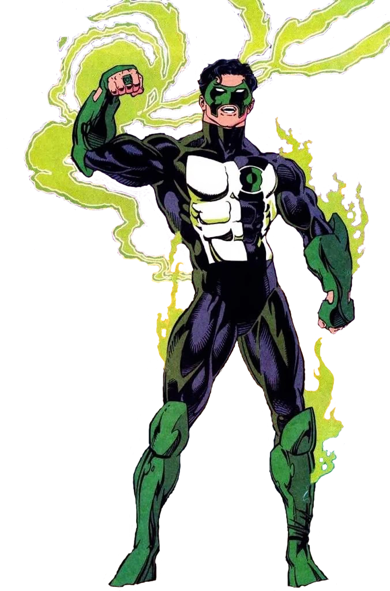

The Green Lantern Corps
more:
more:
The Green Lantern Corps is an intergalactic police force that patrols the universe, maintaining order and protecting it from various threats. The Corps is made up of thousands of members, each assigned to a specific sector of space. They are chosen for their ability to overcome great fear and are equipped with power rings that grant them incredible abilities.
Reading Guide:
more
more
- Green Lantern: Emerald Dawn — Jim Owsley lays the groundwork for what would be the foundation
of pivotal moments and characters that would leave an impact on the Corps and their members.

- DC: The New Frontier — Brainchild of Darwyn Cooke and one of the most memorable stories to
date for
the DC Universe. A revival telling of the Silver Age starring Hal Jordan.

- Geoff Johns' Green Lantern — A widely acclaimed run starring Hal Jordan, highly recommended
to both new and older readers alike.

Famous Members
more:
more:
- Hal Jordan — The most well-known Green Lantern, Hal Jordan is a fearless test pilot who was chosen to wield the power ring after the previous Lantern of Sector 2814, Abin Sur, died. 
- John Stewart — An architect and former Marine, John Stewart is known for his strong will
and tactical mind. He has served as a Green Lantern for many years and is a prominent member of
the Corps.

- Guy Gardner — A brash and outspoken Green Lantern, Guy Gardner is known for his tough
demeanor and unorthodox methods. Despite his rough exterior, he is a dedicated member of the
Corps.

- Kyle Rayner — A talented artist, Kyle Rayner was chosen as a Green Lantern after Hal Jordan's temporary fall from grace. He is known for his creativity and unique approach to using his power ring. 